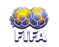

|
 |
FIFA World Cup
Title |
|
- The FIFA World Cup takes place every four years. The national associations
affiliated to FIFA are invited to participate with their national team.
- A representative from FIFA will present the winner of the competition with
the FIFA World Cup trophy, which remains the property of FIFA but may be
kept by the winner until the draw for the final competition of the next FIFA
World Cup. The winner will be awarded a replica of the FIFA World Cup trophy
as its permanent possession.
- The winner shall be responsible for the loss of, or damage to the FIFA
World Cup trophy and shall return it in perfect condition. FIFA is
responsible for engraving the FIFA World Cup trophy and will issue
guidelines for its use.
- If, for any reason, the competition should cease to be held, the FIFA
World Cup trophy shall be returned to the FIFA general secretariat upon
first demand.
- The national associations which take part in the final competition will
each be awarded a souvenir plaque.
- Those national associations ranked first, second, third and fourth in the
final competition will each receive a diploma.
- 45 (forty-five) medals will be presented to each of the three top teams in
the final competition, i.e. gold medals to the winner, silver medals to the
team ranked second and bronze medals to the team ranked third. No further
medals will be awarded.
- The team ranked fourth will receive an award.